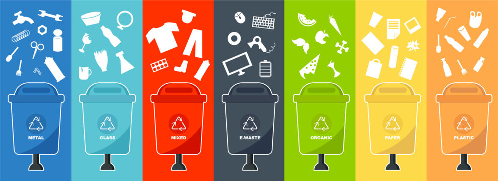
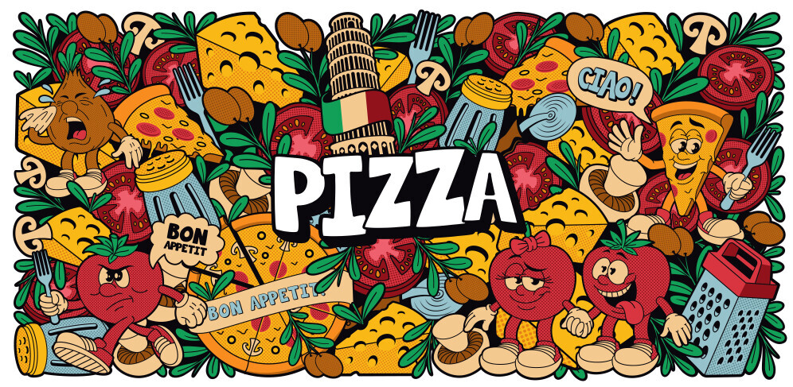

This project explores machine learning, especially CNNs, for classifying compostable materials from waste images, achieving high accuracy. It highlights deep learning's potential to enhance automated waste sorting for sustainable waste management, with a web app deployed using streamlit.

This project uses machine learning, particularly XGBoost, to predict dengue outbreaks in Iquitos and San Juan, leveraging environmental and historical data. Key factors like temperature and precipitation were identified, aiding early warnings and targeted public health interventions.
This interactive Tableau dashboard analyzes British Airways customer reviews, highlighting key metrics like overall ratings, traveler type, and aircraft performance. It provides insights into trends, regional feedback, and satisfaction across service categories to drive data-informed decision-making and improvements.
This project analyzes 4.1M tweets from the 2020 US presidential election, revealing Trump’s higher tweet volume but Biden's greater positive sentiment, demonstrating the utility of sentiment analysis in understanding public opinion and political discourse.

This project leverages advanced SQL analysis of pizza sales data, uncovering critical business insights through comprehensive performance metrics, including revenue analysis, sales trends by pizza category and size, and data-driven recommendations to optimize inventory and marketing strategies.
This project used Tableau to create an interactive dashboard visualizing key road accident metrics, including total accidents, casualties, and fatalities, with breakdowns by vehicle type, weather conditions, and road surface. The project delivered concise yet impactful data visualizations that enabled quick identification of trends and patterns, supporting data-driven decision-making for road safety improvements.
Developed an interactive coffee sales analysis dashboard using Excel, integrating advanced formulas, pivot tables, and dynamic visuals to track sales trends by country, roast type, and customer behavior. Automated data workflows, enhancing reporting accuracy and business insights.